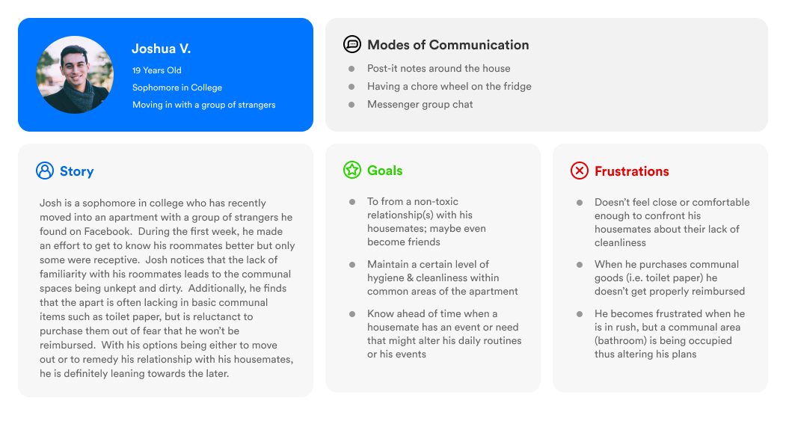
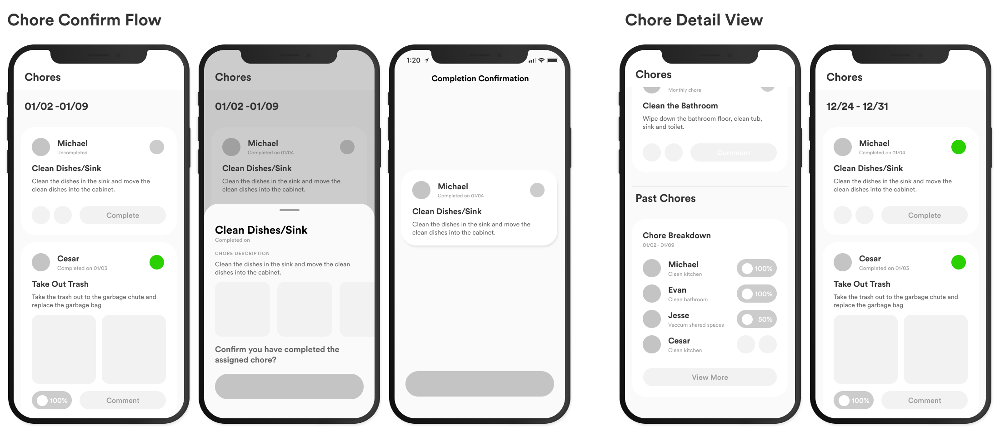
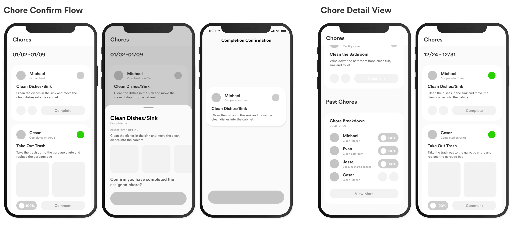

This in-depth case study explores how college students interact with their roommates and attempts to create a product that alleviates the problems associated with their living situations. Through this design case study, I wanted to apply what I’ve learned from my summer internship at Cash App; most notably: creating a design workflow that allows for clear communication and efficient critique, the importance of story telling in interaction design, and working with design system components within Figma.
From the research I could distinguish two different types of users: group goers and independent planners. To better visualize who they are and what they need, I created personas.
From the research I could distinguish two different types of users: group goers and independent planners. To better visualize who they are and what they need, I created personas.
From the research I could distinguish two different types of users: group goers and independent planners. To better visualize who they are and what they need, I created personas.


 


With the flow and general layout of the product decided in the mid-fidelity mock-ups, all that was needed for the hi-fidelity mock ups was to implement the more polished components, [prototype], and review the product for any oversights.
For a while, I struggled to sketch out a solid motif. I messed around with shapes, lines and symbols, but eventually decided on creating a simple guideline in lieu of a traditional motif. Using these guidelines, I created some logo designs for the new GBO. Based on those logo designs, I continued to make icons that represented different types of events: visual arts, food, sports, volunteering events, social groups and music.
Interactions should convey meaning
After getting the initial mock ups completed, I wanted to put in additional effort to understand how the interactions will effect the user experience and how to convey the distinct action flows through interactions. Creating something in the app is always a similar experience; likewise the experience of marking something as complete will feel the same throughout the app.
Looking at the mock-ups, there are three distinct actions that are identifiable. The three actions can be described as: create, confirm, and view. For a more in-depth look into the process of creating these interaction designs-- take a look at my Figma file!


Through doing this case study, I was able to practice my user ethnography skills and apply them to the UX design process. Through my work on this concept app, I was able to take observations from interviews and user sessions and develop them into insights that were relevant in shaping the eventual design. Another learning experience that I took away from this case study was how to conduct testing for interaction design and understanding which interactions work best. A large struggle for this design case study was the visual design choices for the interface.